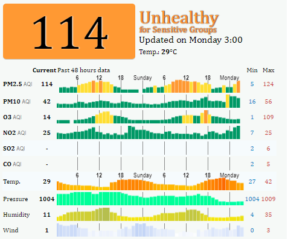

1. preventions:-
Children, seniors and individuals with respiratory or heart diseases should avoid sustained and high-intensity outdoor exercises. General population should moderately reduce outdoor activities.
Before going out or engaging in outdoor activities, get into the habit of verifying the air quality index in your area. This way, you can determine when you should take precautions to safeguard your health.
As a precaution, keep your medication with you.
Avoid areas where the air is polluted.
Contribute to the reduction of outdoor air pollution.
Use methods of transportation that help reduce the amount of pollutants in the air:
.Public transport
.Walk or bike (when air quality is good)
.Carpool
Limit the use of fireplaces and wood stoves in the winter because such appliances contribute a great deal to smog during the cold season. Make sure that you maintain these appliances properly. For more details, visit the MDDELCC’s Wood Heating.
Maintain good indoor air quality.
Pay attention to the air quality inside your home because it could also be harmful to your health.
Certain outdoor pollutants, such as fine particles and ozone, can also get into your house. Other pollutants may already be present, including:
.Tobacco smoke
.Smoke from fireplaces and wood stoves
.Mould and other contaminants associated with excessive humidity
.Volatile organic compounds, mainly formaldehyde, from:
.Household products, such as paints and varnishes
.Construction material, such as chipboard or plywood panels
.Carbon monoxide emitted by some appliances and vehicles during the combustion of propane, wood, fuel, etc.
.Radon, an odourless, colourless radioactive gas that can seep into buildings
.Asbestos from brittle or damaged material that has been sawn, sanded, etc.
Do not smoke indoors.
Fix water infiltration problems to prevent mould growth
Opt for healthy and environmentally friendly household products and materials
Limit the use of wood-burning appliances
Install a carbon monoxide detector, and avoid using appliances that operate on fuel (gasoline, propane, etc.) indoors
Measure the concentration of radon in your home with a dosimeter. You can do it yourself or hire an expert
Learn about the possible sources of asbestos in your home and take the appropriate precautions, especially if you are doing renovations
Opening your windows regularly is an inexpensive and effective measure. However, you should keep your windows shut when outdoor air quality is poor and during periods of extreme cold.
**Be sure to also:
Always turn on the range hood when cooking. The hood should be vented outside.
Turn on the bathroom fan each time someone takes a shower or a bath
If you have a central ventilation system (also known as an air exchanger), operate it according to the manufacturer’s instructions.
2.health effects:-
1.Ozone affects the lungs and respiratory system in many ways.
It can:
.Irritate the respiratory system, causing coughing, throat soreness, airway irritation, chest tightness, or chest pain when taking a deep breath.
.Reduce lung function, making it more difficult to breathe as deeply and vigorously as you normally would, especially when exercising. Breathing may start to feel uncomfortable, and you may notice that you are taking more rapid and shallow breaths than normal.
2.The risk of exposure to unhealthy levels of ground-level ozone is greatest.
during warmer months. Children, who often play outdoors in warmer
weather, are at higher risk.
3.Inflame and damage the cells that line the lungs. Within a few days, the damaged cells are replaced and the old cells are shed—much like the way your skin peels after sunburn. Studies suggest that if this type of inflammation happens repeatedly, lung tissue may become permanently scarred and lung function may be permanently reduced.
4.Make the lungs more susceptible to infection. Ozone reduces the lung’s defenses by damaging the cells that move particles and bacteria out of the airways and by reducing the number and effectiveness of white blood cells in the lungs.
5. When ozone levels are unhealthy, more people with asthma have symptoms that require a doctor’s attention or the use of medication. Ozone makes people more sensitive to allergens—the most common triggers for asthma attacks. Also, asthmatics may be more severely affected by reduced lung function and airway inflammation. People with asthma should ask their doctor for an asthma action plan and follow it carefully when ozone levels are unhealthy.
6.Aggravate other chronic lung diseases such as emphysema and bronchitis. As concentrations of ground-level ozone increase, more people with lung disease visit doctors or emergency rooms and are admitted to the hospital.